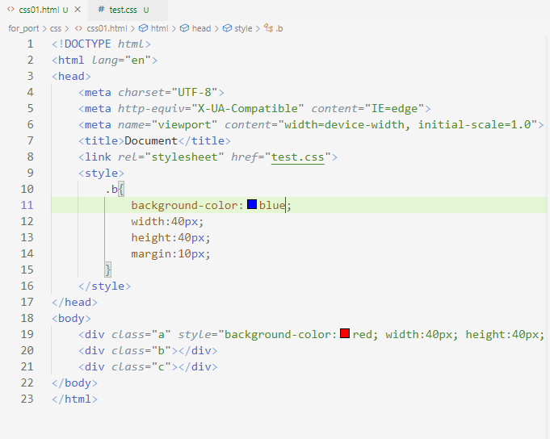
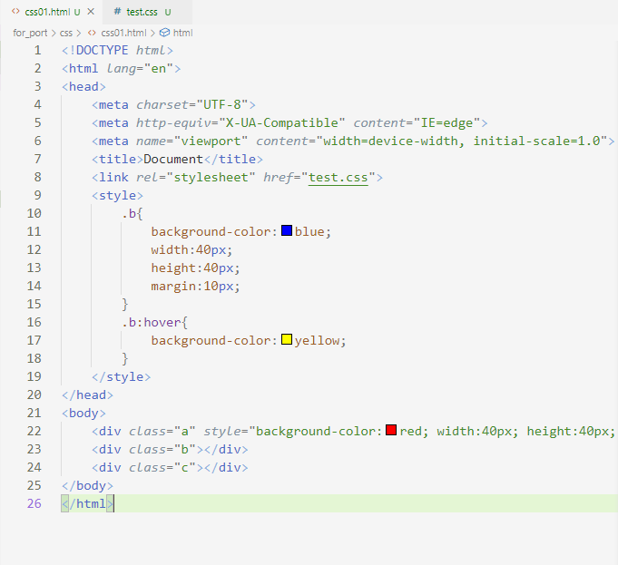

CSS
CSS(Cascading Style Sheets) คือ ภาษาที่ไว้จัดแต่งรูปแบบ Element ต่างๆของ html ไม่ว่าจะเป็นเรื่อง สี, ขนาด, ตำแหน่งซึ่งในการเขียนนั้นสามารถทำได้ 3 รูปแบบคือ เขียนใน tag ของ element, เขียนไว้ใน tag style ด้านใน tag head หรือ เขียนแยก file.css ไว้แล้วใช้ tag link ในการเรียกใช้งานก็ได้ดังรูปด้านล่าง



จะเห็นได้ว่าไม่ว่าจะเขียนในลักษณะไหนก็จะได้ผลลัพธิ์ออกมาเหมือนกัน ในตัวอย่างด้านบนนั้นใน div แต่ละตัวได้มี class เพื่อเป็น selector ของแต่ละ element เพื่อให้สะดวกในการจัดแต่งแต่ละ element ตามต้องการ นอกจากนี้ยังมี event หรือให้ทำการตามเหตุการณ์ที่เราต้องการโดยใช้เครื่องหมาย : ไว้ด้านหลังของ selector แล้วเลือก event ที่ต้องการดังตัวอย่างได้เพิ่ม .b:hover เข้าไปหมายถึงเมื่อ mouse ขยับไปอยู่บน Element .b ให้เปลี่ยนสีพื้นหลังเป็นสีเหลือง


ต่อมาจะเป็นการจัด display ของ element ในที่นี้จะทดลองให้แต่ละ div เรียงเป็นแบบ row ซึ่งได้ทำการเพิ่ม div เข้าไปหนึ่งตัวมี class คือ m และเพิ่ม display: flex และ flex-direction: row

จะเห็นได้ว่าจากที่ div เรียงแบบ column ได้เปลี่ยนเป็นแบบ row แล้วซึ่งการจัดรูปแบบ display เป็น flex นั้นเป็นที่นิยมมากในปัจจุบันเพราะทำให้จัดการเรื่องการแสดงผลบนหน้าจอของแต่ละเครื่องมือได้เป็นอย่างดีและต่อมาจะเป็นการลองสร้างเมนู bar แบบง่ายๆโดยใช้ css โดยสร้าง div class container เพื่อเก็บข้อมูลของเมนูและใช้ tag ul ในการสร้าง list เมนูขึ้นมาส่วนด้านในนั้นเป็น tag a เพื่อให้ link ไปยังหน้าที่ต้องการ ต่อมาได้ใช้ css จัดให้เป็นแนวนอนโดยใช้ display: inline-block ทั้ง div class container และ li เปลี่ยนพื้นหลังและปรับ padding และ margin ให้สวยงามตามโค้ดด้านล่าง


รูปด้านบนคือผลลัพธิ์ที่ได้ส่วนตัวหนังสือด้านในนั้น generate จาก lorem ช่วยแสดงเนื้อหน้าให้เว็บตัวอย่างดูดีขึ้นและนอกจากนี้ยังมีอีกหลาย วิธีเขียนซึ่งขึ้นอยู่กับแต่ละ element และความต้องการของเราซึ่งสามารถอ่านเพิ่มเติมได้ด้านล่าง
https://www.w3schools.com/
https://developer.mozilla.org/en-US/